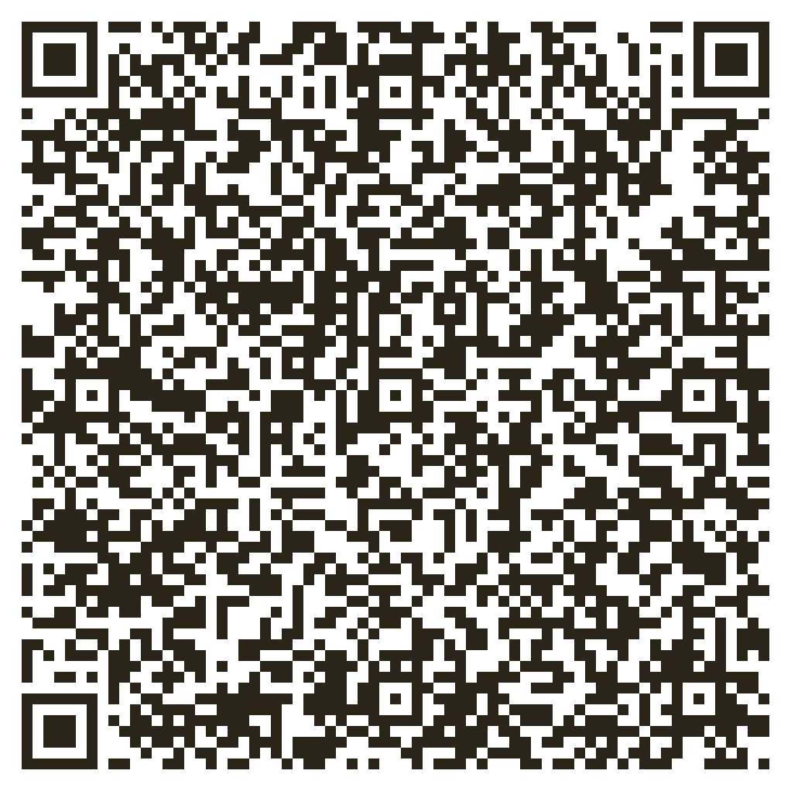

Любая помощь — деньгами, кормом или временем — сокращает путь кошки от улицы к дому.
| Наименование | АНО «В ШАГЕ ОТ ДОМА» |
| ИНН | 4400012713 |
| КПП | 440001001 |
| ОГРН | 1234400000911 |
| Расчётный счёт | 40703810429000000096 |
| Банк | Центрально-Чернозёмный банк ПАО Сбербанк |
| БИК банка | 042007681 |
| Корр. счёт | 30101810600000000681 |
| ИНН банка | 7707083893 |
| КПП банка | 440102001 |
| Адрес организации | 157940, Костромская область, м.р-н Красносельский, пгт Красное-на-Волге, пер. Пушкино, д. 45 |

Отсканируйте камерой телефона или в приложении банка — реквизиты для перевода подставятся автоматически. Работает в большинстве банковских приложений, поддерживающих оплату по QR с реквизитами.
Нужна помощь с передержкой, транспортировкой кошек к ветеринару и выездами на обращения. Напишите нам в VK или позвоните.
Принимаем сухой и влажный корм, наполнитель, лекарства — по адресу пер. Пушкино, д. 45, пгт Красное-на-Волге, или через группу VK, чтобы согласовать передачу.
Репост анкеты кошки в вашей группе или сторис часто ускоряет поиск дома не хуже пожертвования.